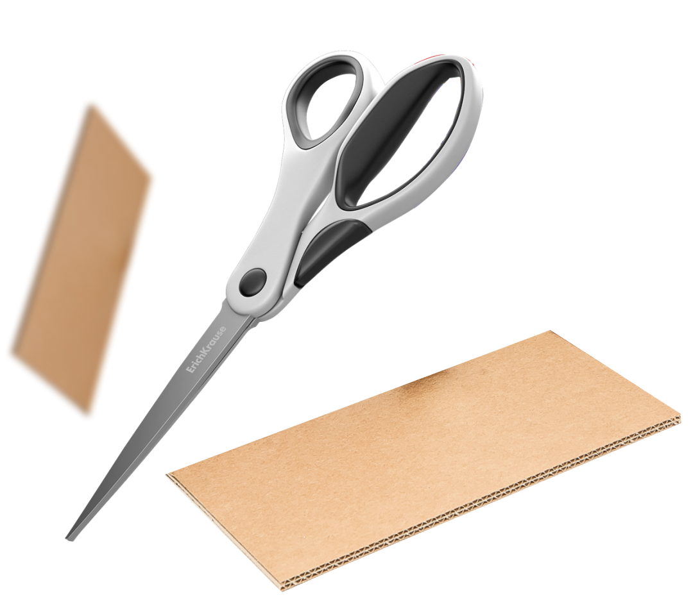
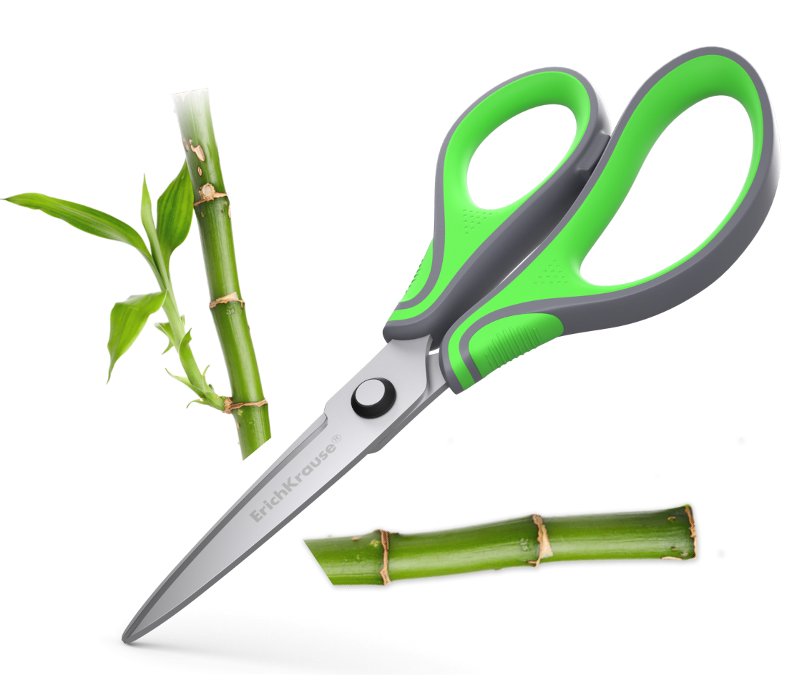
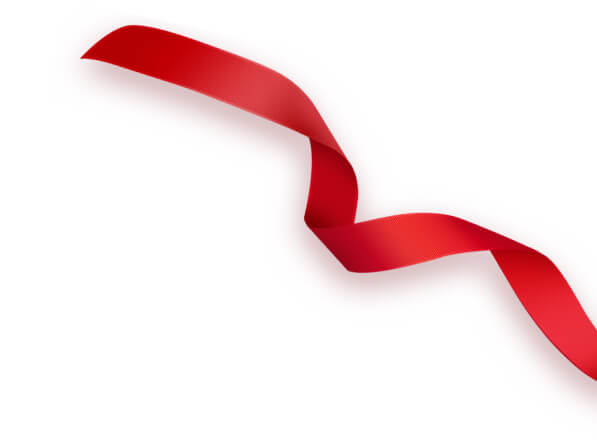
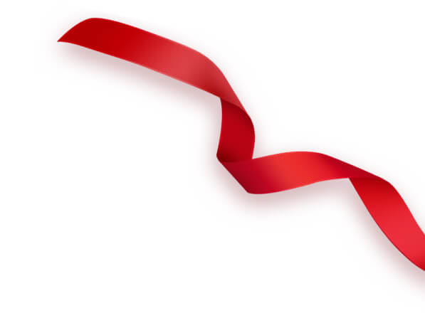

Ножницы ErichKrause®
Компания Erich Krause представляет широкий ассортимент ножниц для офиса и дома. Надежные и комфортные ножницы ErichKrause® созданы профессионалами и пользуются огромной популярностью во всем мире.
Типы лезвий

Изящная практичность
Легкие и удобные ножницы для широкого круга
задач с отличными режущими характеристиками.
-
Режуща кромка стала
острее благодаря
уменьшенному углу заточки -
Производительность
ножниц увеличена

Легко и без усилий
Благодаря уникальной форме лезвий ножницы уменьшают
прилагаемое усилие и позволяют с легкостью в одно движение
разрезать даже плотный картон.
-
Уникальная
дугообразная
форма режущей кромки -
Рез в одно движение
благодаря более широкому
углу схождения лезвий -
Минимум усилий
при работе с более
плотным материалом
Удовольствие от работы
Ножницы эргономичной формы с уникальной формой и особой заточкой
лезвий дарят максимум комфорта в работе как с бумагой,
так и более плотными материалами
-
Противоскользящие
вставки на ручках для
дополнительного
удобства в использовании -
Особо острая режущая
кромка благодаря
многопрофильной заточке
и дугообразной форме -
Минимум усилий
при максимальной
производительности

Лезвия нового поколения
Особая технология производства и заточки делают данные
модели флагманами среди всего ассортимента ножниц,
обеспечивая непревзойденную эффективность.
-
Уникальная технология
производства
и заточки лезвий -
Особо острые
и мощные среди
аналогов -
Минимум усилий
при максимальной
производительности
Забота и комфорт
Детские ножницы с закругленными концами лезвий
для безопасного использования
во время творческих занятий.
-
Безопасные
закругленные концы
лезвий -
Специальные размеры
и особая эргономика
для детских рук -
Яркий дизайн
Новинка


 


ErichKrause® - бренд канцтоваров №1 в России
По результатам ежегодного всероссийского репрезентативного опроса, проводимого аналитическим центром Юрия Левады («Левада-Центр»), ErichKrause® в 2015-2020 годах признан самым известным брендом канцелярских товаров в Российской Федерации.
Отзывы наших клиентов
Ножницы ErichKrause®
Компания Erich Krause выпускает широкий ассортимент ножниц с повышенным уровнем комфорта и безопасности.
Ножницы – универсальный инструмент, который всегда под рукой. Частое и активное использование подразумевает повышенные требования к прочности и долговечности. Новый уровень комфорта и безопасности, реализованный в ножницах ErichKrause® исключает случайное открытие ножниц, обеспечивает максимальную сохранность лезвий, защищает от повреждений во время хранения и транспортировки, гарантирует долгий срок службы.
Ножницы оснащены усовершенствованными лезвиями с дугообразной геометрией режущей кромки, широким углом схождения и многопрофильной заточкой. Отличаются высокой эффективностью и производительностью, позволяя с легкостью разрезать больший объем бумаги по сравнению с обычными ножницами. Угол режущей кромки стал еще острее. Ножницы обладают большей эффективностью по сравнению с аналогами конкурентов.
Ручки ножниц имеют классическую или эргономичную форму и выполнены из ударопрочного пластика с мягкими противоскользящими резиновыми вставками для большего комфорта и удобства в работе. Благодаря особой эргономичной форме ручек ножницы удобно держать в руке. Резать ими удивительно легко и приятно даже плотную бумагу и картон.
Эффективные и красивые ножницы ErichKrause® станут надежным помощниками в офисной работе и домашних делах.